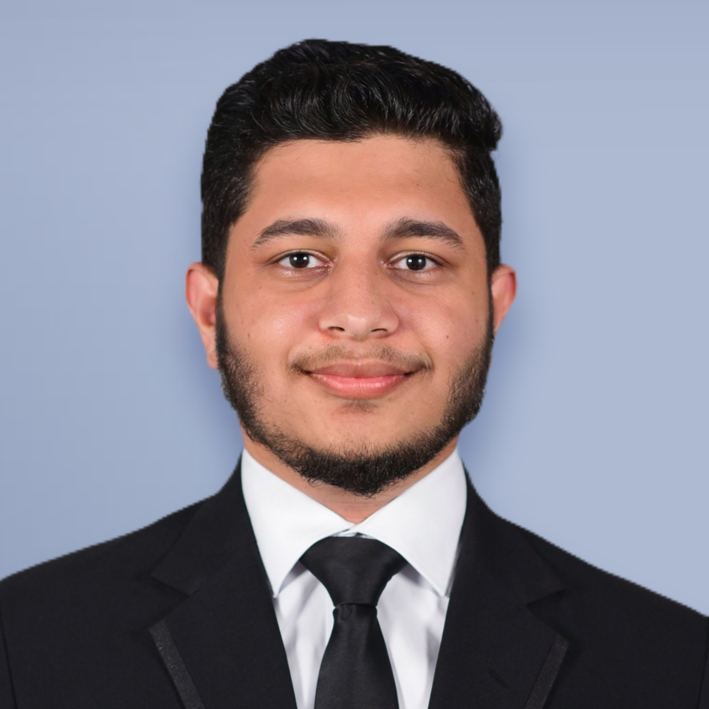

Niskani Niyas

Summary
-
Seeking a Web Developer position with ABC Company where I can use my
expertise in HTML, CSS, JavaScript, and PHP to create high-performing
websites.
Education
-
SouthEastern University of Sri Lanka, Ampara (2018 - 2022)
BSc in Physical Science ,
Subjects: Computer Science , Mathematics 1 & Mathematics 2
- Gri/Kekunagolla National School, Kurunegala (2003 - 2016)
Skills
- Frontend: HTML, CSS, Bootstrap, JavaScript, React.js*
- Backend: Python, Express*, Node.js*
-
Databases: SQLite , MongoDB*
*courses yet to be completed
Work Experience
-
Athugalpura Science Development Academy, Kekunagolla, Kurunegala. (Nov
2021 – Apr 2023)
collaborating with other teachers and administrators to ensure student
success and promote a cohesive educational experience.
Certifications
- Completet MERN stack developer bootcamp at Udemy